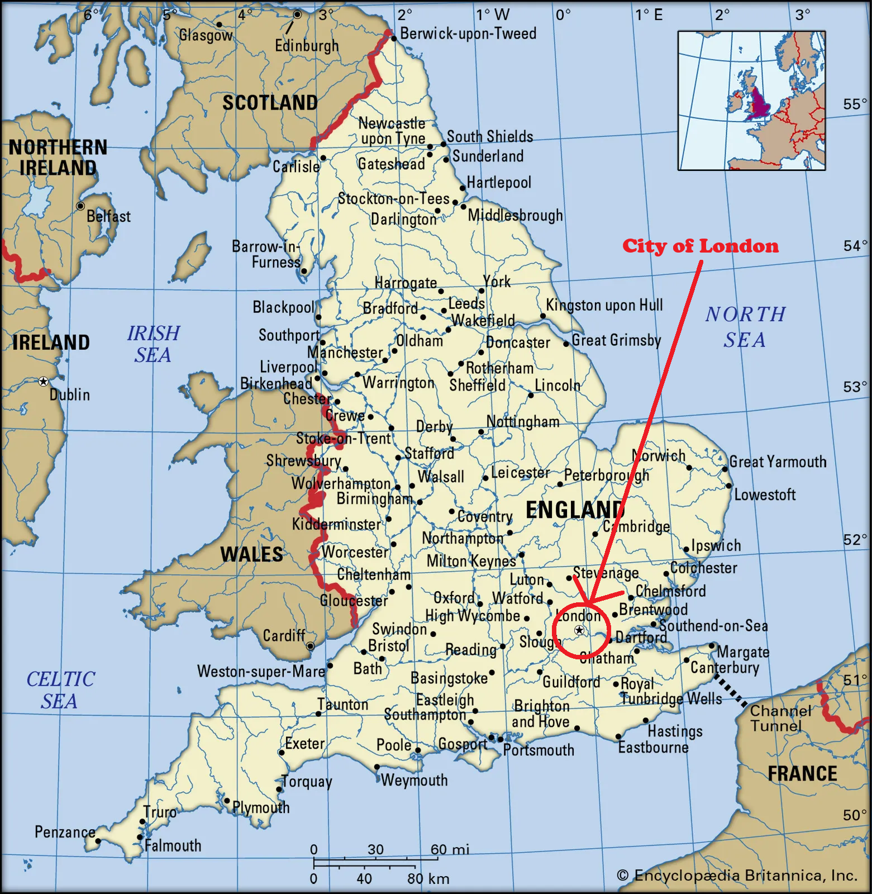
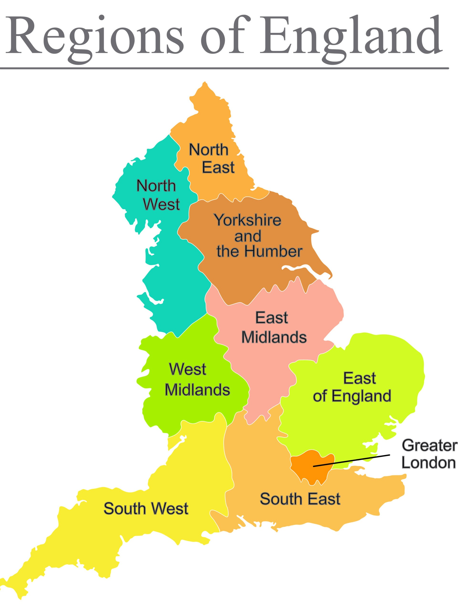
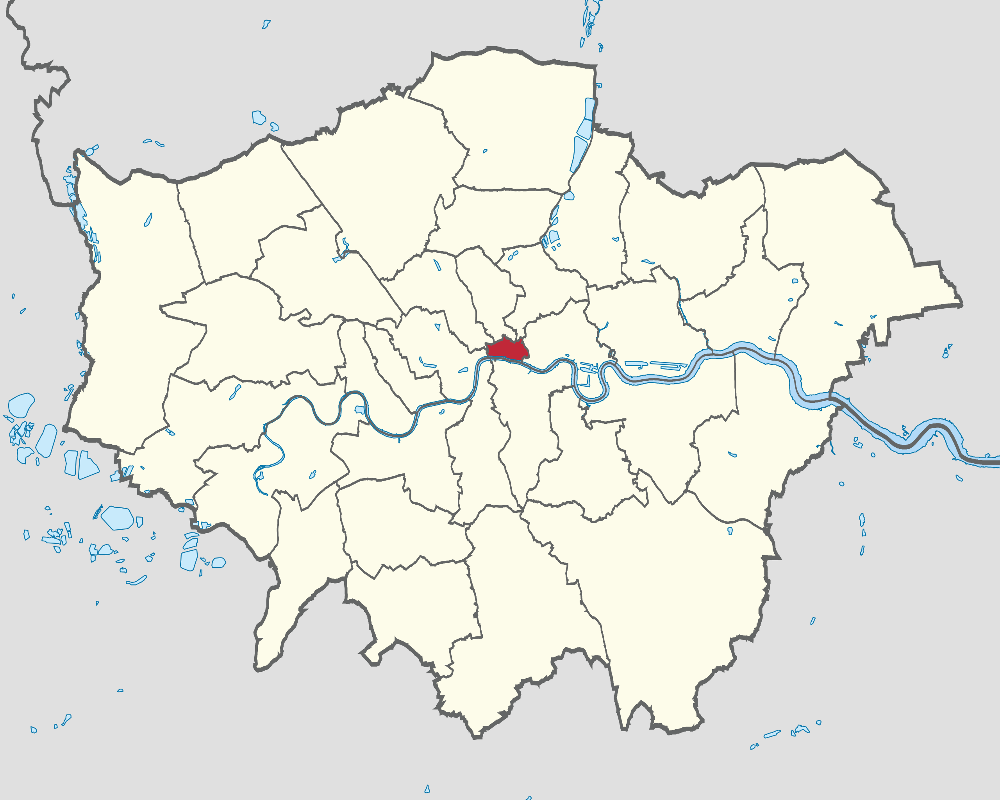
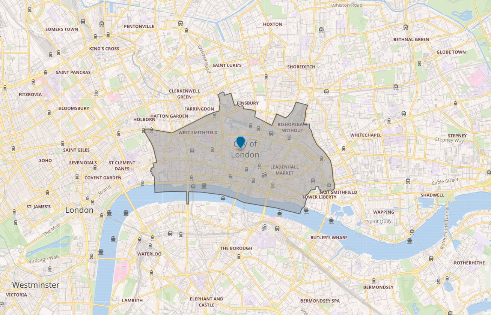

Explore London with various maps
Navigate the vibrant streets of London with ease. Use these detailed maps to find landmarks, plan routes, and explore neighborhoods.
Geographical Significance
London, the capital of the United Kingdom, is located in the southeastern part of England, along the banks of the River Thames. The city spans both sides of the river, which has shaped its history and development for over two millennia.
Positioned approximately 50 miles (80 kilometers) inland from the North Sea, London benefits from its strategic location, connecting it to both domestic and international trade routes. The city is surrounded by the lush countryside of the Home Counties—including Surrey, Kent, and Essex—and enjoys proximity to important natural and urban landmarks.
London's geography is defined by its mix of historic boroughs and modern metropolitan areas, with notable green spaces like Hyde Park, Richmond Park, and the vast network of canals in East London. Its central location in the UK makes it a hub for transportation, culture, and commerce, cementing its role as one of the world's most influential cities.
Positioned approximately 50 miles (80 kilometers) inland from the North Sea, London benefits from its strategic location, connecting it to both domestic and international trade routes. The city is surrounded by the lush countryside of the Home Counties—including Surrey, Kent, and Essex—and enjoys proximity to important natural and urban landmarks.
London's geography is defined by its mix of historic boroughs and modern metropolitan areas, with notable green spaces like Hyde Park, Richmond Park, and the vast network of canals in East London. Its central location in the UK makes it a hub for transportation, culture, and commerce, cementing its role as one of the world's most influential cities.
Location of London in the United Kingdom

Location of London in England

Surrounding Counties of London
London is bordered by several counties that contribute to its dynamic metropolitan area. These counties offer both scenic countryside and access to vibrant towns, each with its unique appeal:
Surrey : To the southwest, known for its rolling hills, charming villages, and proximity to Gatwick Airport.
Kent : To the southeast, home to historic sites like Canterbury and beautiful coastal areas.
Essex : To the northeast, featuring coastal towns and close proximity to Stansted Airport.
Hertfordshire : To the north, known for its scenic countryside and commuter towns like St Albans.
Berkshire : To the west, home to the historic Windsor Castle and green landscapes.
Surrey : To the southwest, known for its rolling hills, charming villages, and proximity to Gatwick Airport.
Kent : To the southeast, home to historic sites like Canterbury and beautiful coastal areas.
Essex : To the northeast, featuring coastal towns and close proximity to Stansted Airport.
Hertfordshire : To the north, known for its scenic countryside and commuter towns like St Albans.
Berkshire : To the west, home to the historic Windsor Castle and green landscapes.
London City vs. Greater London
London is a city of contrasts, with distinct differences between its historic core, the City of London, and the broader Greater London.
City of London: Known as the "Square Mile," this is the ancient heart of London, dating back to Roman times. It is the financial district and the oldest part of the city, home to iconic landmarks like St. Paul's Cathedral, Bank of England, and London Bridge. Despite its small geographical size, it holds immense influence over global finance and commerce.
Greater London: This encompasses a much larger area, made up of 32 boroughs and the City of London. It includes everything from the historic sites and cultural institutions in central London to vibrant residential areas and parks like Hyde Park and Kensington Gardens. Greater London is a modern, sprawling metropolis, offering a blend of history, culture, and modern urban living.
City of London: Known as the "Square Mile," this is the ancient heart of London, dating back to Roman times. It is the financial district and the oldest part of the city, home to iconic landmarks like St. Paul's Cathedral, Bank of England, and London Bridge. Despite its small geographical size, it holds immense influence over global finance and commerce.
Greater London: This encompasses a much larger area, made up of 32 boroughs and the City of London. It includes everything from the historic sites and cultural institutions in central London to vibrant residential areas and parks like Hyde Park and Kensington Gardens. Greater London is a modern, sprawling metropolis, offering a blend of history, culture, and modern urban living.
City of London within the Great London

Map of the London City

Infrastructure in London City
The City of London, often referred to as the "Square Mile," is a historic and financial hub with essential infrastructure:
Airports : London City Airport, the primary airport serving the City of London, offering quick access to international and domestic destinations.
Hospitals : A number of healthcare facilities, including St. Bartholomew's Hospital, one of the oldest and most renowned hospitals in the city.
Transportation : Well-connected by public transport with multiple Underground stations (e.g., Bank, Monument) and rail connections, as well as the Docklands Light Railway (DLR).
Parks : Several green spaces, including the famous Bunhill Fields and the peaceful Inner Temple Garden.
Cultural Venues : Home to a variety of cultural and historic venues, such as the Museum of London and the iconic St. Paul's Cathedral.
Airports : London City Airport, the primary airport serving the City of London, offering quick access to international and domestic destinations.
Hospitals : A number of healthcare facilities, including St. Bartholomew's Hospital, one of the oldest and most renowned hospitals in the city.
Transportation : Well-connected by public transport with multiple Underground stations (e.g., Bank, Monument) and rail connections, as well as the Docklands Light Railway (DLR).
Parks : Several green spaces, including the famous Bunhill Fields and the peaceful Inner Temple Garden.
Cultural Venues : Home to a variety of cultural and historic venues, such as the Museum of London and the iconic St. Paul's Cathedral.